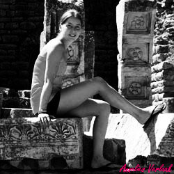

Welkom op mijn website!
Mijn naam is Annelies Verlaak. Ik ben 20 jaar oud en ik zit in mijn laatste jaar Event- en projectmanagement aan de Katholieke Hogeschool van Leuven.
Mijn droom is om een echte eventmanager te worden en trouwfeesten, verjaardagen en eigenlijk zowat allerlei soorten themafeesten te organiseren. De vraag is alleen of ik daar al mee wil beginnen nadat ik afgestudeerd ben in juni.
Er zijn namelijk nog zoveel dingen die mij interesseren. De kans is dus groot dat ik na mijn studies Event- en projectmanagement nog ga verder studeren. Wat ik juist ga studeren, daar moet ik nog eens goed over nadenken.
Wat wel zo goed als vaststaat, is dat ik een avondcursus fotografie zal volgen. Vanaf september 2014 zou ik hier graag mee starten omdat ik over de jaren heen een liefde ontwikkeld heb voor fotografie.
Ik zit dus nog vol plannen die ik hopelijk beetje bij beetje kan realiseren.